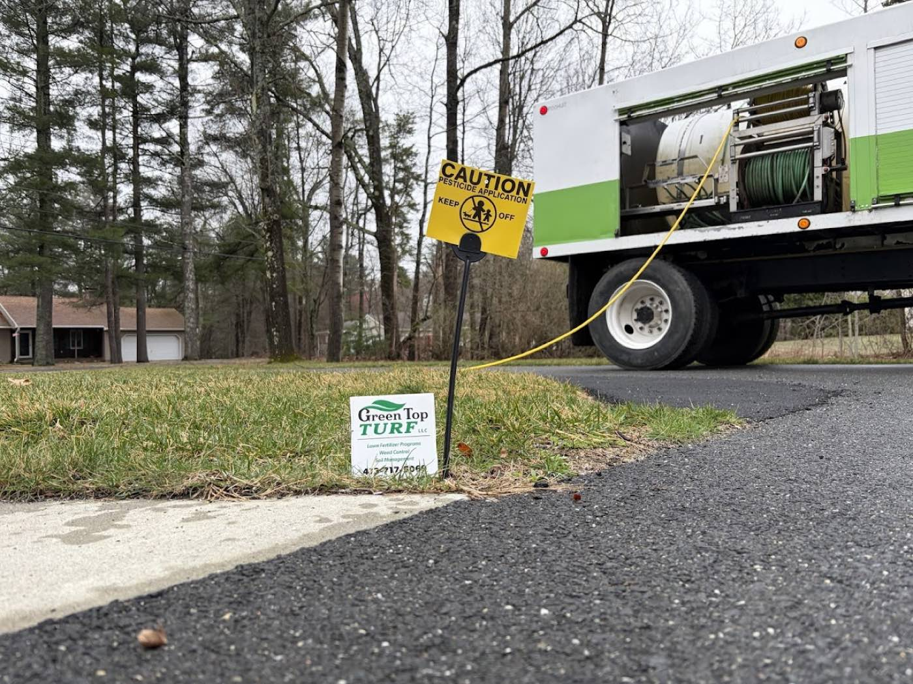
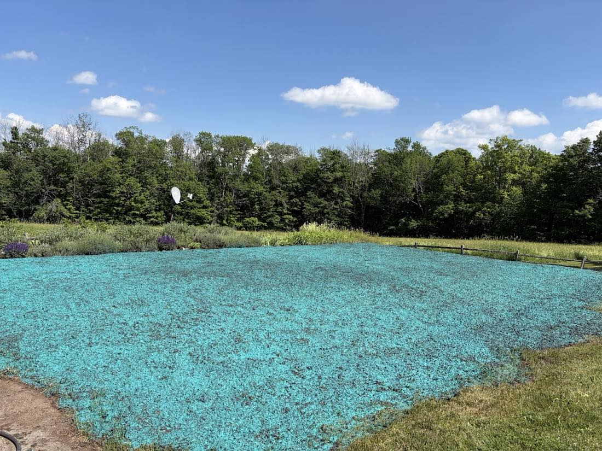
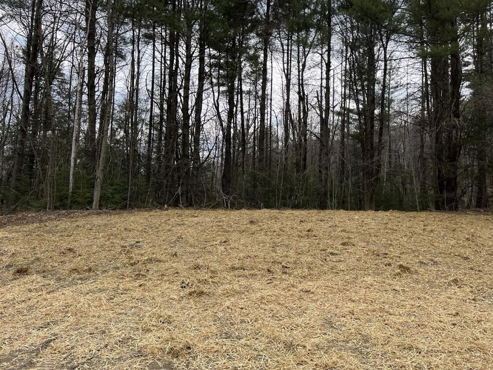
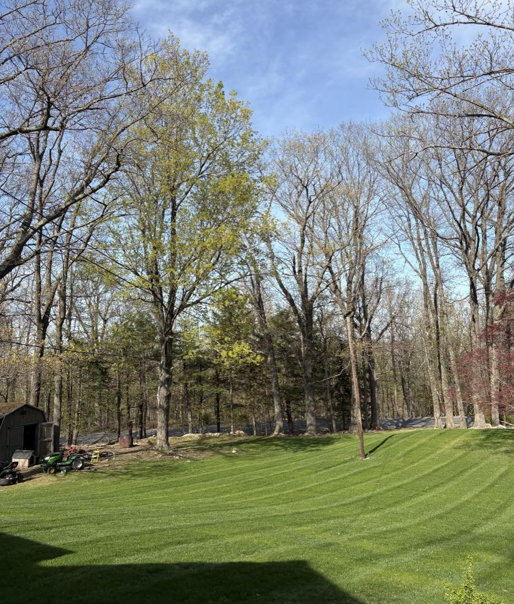
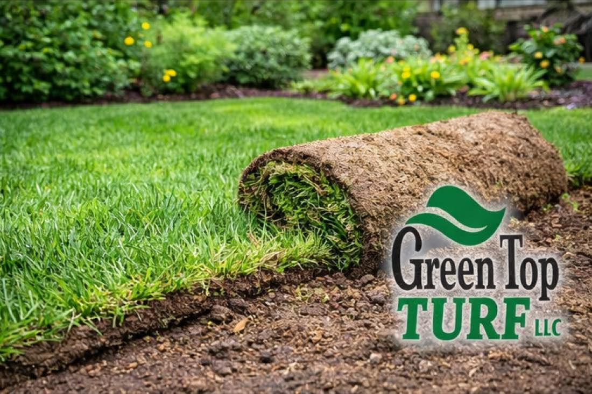
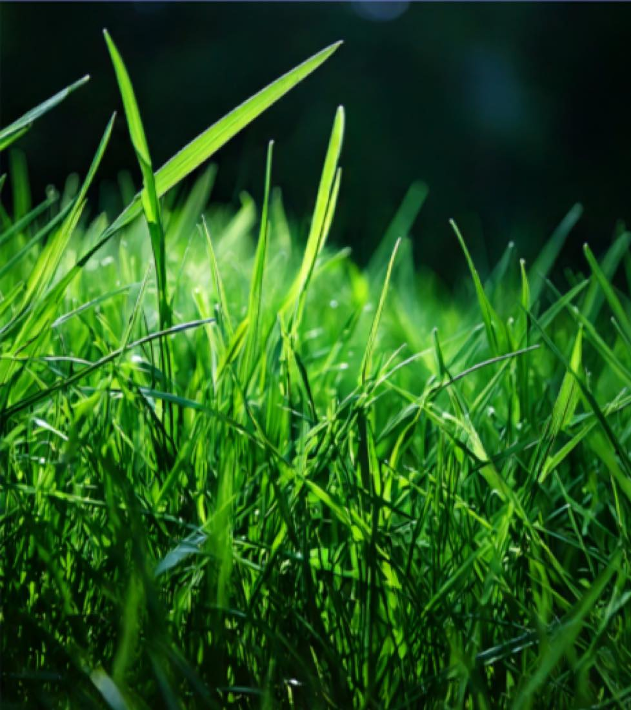

01
Aeration
Core aeration to relieve compaction and open up the soil — so water, air and nutrients reach the roots.
Turf-improvement specialist
Aeration, overseeding, hydroseeding and fertilizing in Blandford and across Hampden County, Massachusetts. Turf science, done right.
5.0 · 10 reviews on Google

Core aeration to relieve compaction and open up the soil — so water, air and nutrients reach the roots.
Re-seeding thin or worn lawns to thicken the stand and crowd out weeds — a step most landscapers skip.
Spray-applied seed slurry for fast, even establishment on new lawns and bare ground — early season through summer.
Targeted fertilizing programs that build color and density season over season — applied with calibrated spreaders.
Routine mowing and upkeep to keep that improved turf looking the way it should — clean, striped and healthy.
Turf improvement is the whole point — not an afterthought. Tell us what your lawn is doing and we’ll tell you the fix.
Call to talk turf




Every lawn here was built with the same turf-science approach — aerate, seed, feed, repeat.
Text for a quoteGoogle review
Reviewers credit Green Top with aerating and re-seeding their lawn — a service most landscape companies don’t offer.
Google review
Reviewers say Green Top specializes in taking lawns to the “next level of green.”